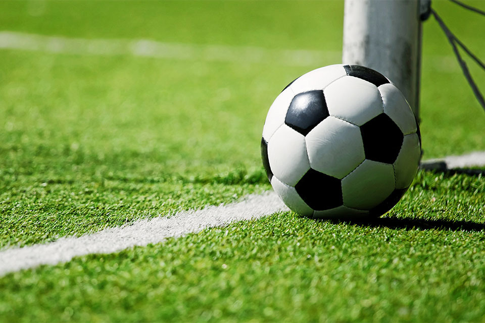
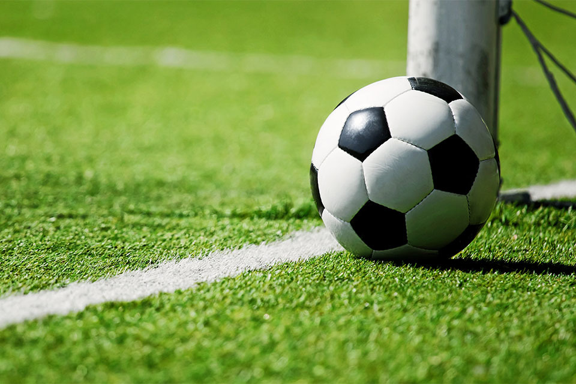

Football is a family of team sports that involve, to varying degrees, kicking a ball to score a goal. Unqualified, the word football normally means the form of football that is the most popular where the word is used. Sports commonly called football include association football (known as soccer in North America, Ireland and Australia); gridiron football (specifically American football or Canadian football); Australian rules football; rugby union and rugby league; and Gaelic football.These various forms of football share to varying extents common origins and are known as "football codes".
.jpg) 

There are a number of references to traditional, ancient, or prehistoric ball games played in many different parts of the world. Contemporary codes of football can be traced back to the codification of these games at English public schools during the 19th century. The expansion and cultural influence of the British Empire allowed these rules of football to spread to areas of British influence outside the directly controlled Empire. By the end of the 19th century, distinct regional codes were already developing: Gaelic football, for example, deliberately incorporated the rules of local traditional football games in order to maintain their heritage.In 1888, The Football League was founded in England, becoming the first of many professional football associations. During the 20th century, several of the various kinds of football grew to become some of the most popular team sports in the world.
| Taretiv | Anckacman vayr | Campion |
| 2022 | Qatar | Argentina |
| 2018 | Rusastan | Paris |
| 2014 | Brasil | Fransia |
| 2010 | HAH | ispaniaa |
| 2006 | Germnania | Italic |